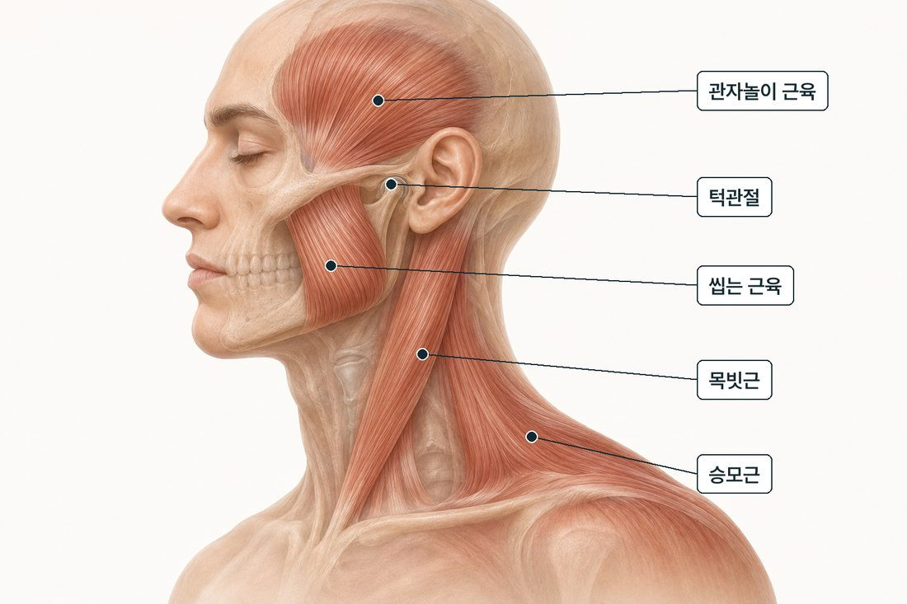
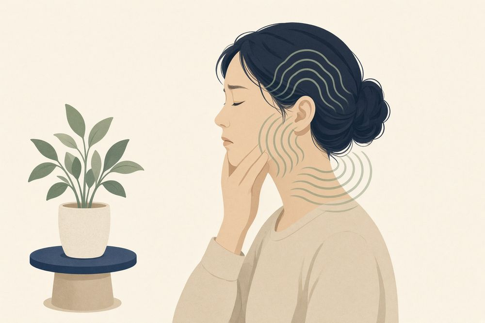
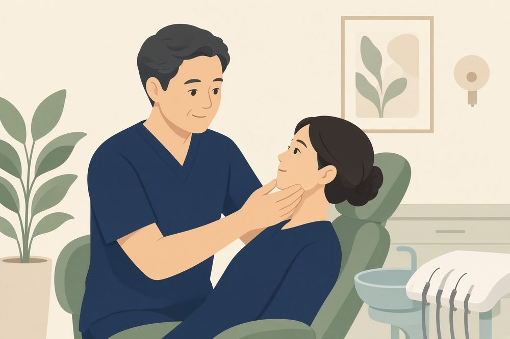

MEAW
MEAW씹는 근육은 머리까지 이어집니다
저작근(씹는 근육)은 턱에만 있지 않습니다. 관자놀이까지, 머리 옆면에 넓게 붙어 있습니다.
턱 아래로는 목·어깨 근육이 이어져, 씹는 근육이 긴장하면 머리가 조이는 느낌이나 목·어깨 결림이 같이 나타나기도 합니다.

턱 관련 두통의 양상
턱과 관련된 두통은 대체로 아래 특징을 보입니다. 해당되는 항목이 많을수록 씹는 근육을 확인해 볼 필요가 큽니다.
- ✓관자놀이나 머리 옆면이 조이듯 아프다
- ✓아침에 일어났을 때부터 머리가 무겁다
- ✓씹을 때, 입을 크게 벌릴 때 더해진다
- ✓턱 소리나 턱 통증이 함께 있다
- ✓목·어깨 결림이 같이 온다
압통 재현
관자놀이와 볼을 눌렀을 때 평소 두통과 비슷한 통증이 나타나면, 씹는 근육이 관련되었을 가능성이 큽니다.

이런 두통은 다른 진료가 먼저입니다
난생처음 겪는 극심한 두통, 벼락 치듯 갑자기 시작된 두통, 열·구토·마비·발음 어눌함이 함께 오는 두통은 턱과 무관한 원인부터 확인해야 합니다. 신경과 진료가 먼저입니다.
두통의 원인이 턱에 있는 경우
턱에서 시작된 긴장이 두통으로 이어지는 흔한 경우는 세 가지입니다.
이 악물기
수면 중, 집중할 때의 이 악물기는 측두근을 지속적으로 수축시킵니다. 아침부터 머리가 무거운 두통의 흔한 원인입니다.
목으로 이어지는 긴장
턱 근육의 긴장은 턱에서 끝나지 않고 목과 어깨로 이어집니다. 목 뒤가 굳으면 뒷머리가 당기듯 아픈 두통이 따라오기도 합니다.
통증의 번짐
근육의 긴장은 그 자리가 아닌 다른 곳의 통증으로 느껴지기도 합니다. 저작근을 눌렀을 때 머리에 통증이 재현되는 것이 그 예입니다.
진통제 반응과 원인 확인
진통제는 그때의 통증을 줄여 주지만, 원인이 턱 근육의 긴장이라면 두통은 다시 생깁니다. 약 먹는 횟수가 잦아지는 경우에는 통증 조절과 별개로 원인 확인이 필요합니다.
턱과 관련되는지는 근육을 눌러 보는 검사와 입이 벌어지는 정도·움직임 검사로 확인합니다.

두통 환자의 턱 검사
두통이 턱과 관련되는지는 아래 순서로 확인합니다.
- ✓씹는 근육과 목 근육을 눌러 아픈 자리 찾기
- ✓입이 벌어지는 범위와 움직이는 길 확인
- ✓턱 소리, 이 악물기·이갈이 습관 확인
- ✓두통이 언제, 어디서, 어떻게 아픈지 듣기
턱과 관련된 두통으로 확인되면, 원인이 되는 근육의 긴장과 습관을 함께 치료합니다. 턱 문제가 아니라고 판단되면, 증상에 맞는 진료과를 안내해 드립니다.